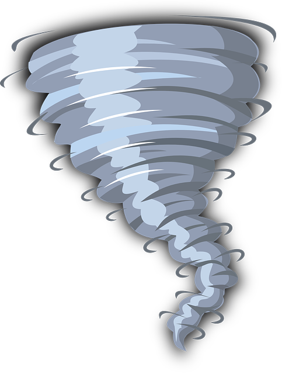

<!-- The top of file index.html -->
<html itemscope itemtype="http://schema.org/Article">
<head>
  <!-- BEGIN Pre-requisites -->
  <script src="//ajax.googleapis.com/ajax/libs/jquery/1.8.2/jquery.min.js">
  </script>
  <script src="https://apis.google.com/js/client:platform.js?onload=start" async defer>
  </script>
  <!-- END Pre-requisites -->
  <!-- Continuing the <head> section -->
  <script>
    function start() {
      gapi.load('auth2', function() {
        auth2 = gapi.auth2.init({
          client_id: 'YOUR_CLIENT_ID.apps.googleusercontent.com',
          // Scopes to request in addition to 'profile' and 'email'
          //scope: 'additional_scope'
        });
      });
    }
  </script>
</head>
<body>
  <!-- ... -->
</body>
</html>
<!-- Add where you want your sign-in button to render -->
<!-- Use an image that follows the branding guidelines in a real app -->
<button id="signinButton">Sign in with Google</button>
<script>
  $('#signinButton').click(function() {
    // signInCallback defined in step 6.
    auth2.grantOfflineAccess().then(signInCallback);
  });
</script>
<!-- Last part of BODY element in file index.html -->
<script>
function signInCallback(authResult) {
  if (authResult['code']) {

    // Hide the sign-in button now that the user is authorized, for example:
    $('#signinButton').attr('style', 'display: none');

    // Send the code to the server
    $.ajax({
      type: 'POST',
      url: 'http://example.com/storeauthcode',
      // Always include an `X-Requested-With` header in every AJAX request,
      // to protect against CSRF attacks.
      headers: {
        'X-Requested-With': 'XMLHttpRequest'
      },
      contentType: 'application/octet-stream; charset=utf-8',
      success: function(result) {
        // Handle or verify the server response.
      },
      processData: false,
      data: authResult['code']
    });
  } else {
    // There was an error.
  }
}
</script>
<!DOCTYPE html>
<html>
  <head>
    <meta charset="utf-8">
    <meta name="viewport" content="width=device-width">
    <title>Live Weather Chaser</title>
    <link href="style.css" rel="stylesheet" type="text/css" />
  </head>
  <body>
    <header>
      
      <h1>Storm Report / Live Weather Chaser</h1>
    </header>
    <main>
      <!-- This article block is a single blog post! Copy and paste to add additional posts -->
      <article>
        <h3>Weather reporting-guidelines</h3>
        <hr />
        <h2>Minimum Severe Reporting Criteria</h2>
       <p>- All tornado, rotating wall cloud, etc.</p>
       <p>- All hail reports allowed.</p>
       <p>- Only measured wind speeds and/or gusts greater than 50 mph</p>
       <p>- All severe hydro related events (flooding, flash flood, etc). Reports should include impacts.</p>
       <p>- All notable damage generated from a storm</p>
       <p>- All winter reports, IF they have a significant impact</p>
       <p>- All tropical reports, IF they have a significant impact
</p>
      </article>
      
      <article>
        <h3>Canada / USA</h3>
        <hr />
        <p>Our Meteorologist will verifie your weather report.</p>
        <p>They will send you an email after the verification.</p>
        <p class="date">Update 2020-04-10</p>
      </article>
    </main>
    <footer>
     Copyright 2020 Joey Cadieux.
     <p>Joey@tech-center.com</p>
    </footer>
  </body>
</html>